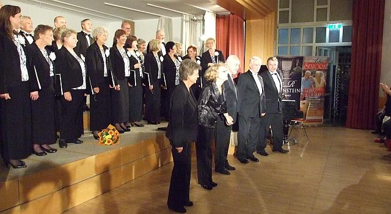

A tymczasem w Cameracie...
.
2013-10-16
Wielickie Stowarzyszenie Muzyczne – Chór Camerata pod dyrekcją Izabeli Szoty wrócił z tournée do Wiednia i Bratysławy. Wyjazd odbył się na zaproszenie polskiego UTW w Austrii i przypadł na okres związany z obchodami XXII Dni Polskich w Austrii.
Jak zwykle sponsorowani byliśmy przez Firmę Regis Spółka z o.o. z Krakowa.
Wsparcia finansowego udzieliło nam również Centrum Kultury i Turystyki w Wieliczce, pod patronatem którego działa nasz chór.

Kahlenberg (po polsku Łysa Góra) to wzgórze pod Wiedniem, z którego w 1683 roku Król Polski Jan III Sobieski dowodził zwycięską bitwą o Wiedeń z Turkami. Kościół i klasztor pokamedulski stały się z czasem sanktuarium polskiego patriotyzmu, o którym mówi się też: „Kahlenberg - polska enklawa w Wiedniu”.
Kolejny koncert odbył się w sali koncertowej Don Bosco Haus w wiedeńskim Centrum Kształcenia Młodzieży i Dorosłych. Była to inauguracja II roku akademickiego Polskiego Uniwersytetu Trzeciego Wieku w Austrii, w którym uczestniczyło ponad 200 osób.
Właśnie nasz chór pod dyr. Izabeli Szoty uświetnił koncertem uroczystość rozpoczęcia nowego roku akademickiego, zaczynając od hymnu „Gaudeamus Igitur”.
Gośćmi honorowymi uroczystości byli Artur Lorkowski - Ambasador RP w Austrii i Elżbieta Achinger, posłanka na Sejm Rzeczypospolitej Polskiej.
Wśród gości byli także członkowie UTW z Wieliczki, przedstawiciele organizacji polonijnych oraz mediów, m.in. redaktorzy ogólnopolskiego miesięcznika "Głos Seniora".
Koncert chóru „Camerata” był niezwykle ciepło odebrany przez publiczność, którą w większości stanowili nasi rodacy, mieszkający w stolicy Austrii. Po koncercie był czas na rozmowy z rodakami przy lampce wina.
Katedra św. Marcina to największy i najważniejszy kościół w Bratysławie, stolicy Słowacji, położony w centrum miasta, tuż przy ruchliwej ulicy Staromiejskiej. Przez 300 lat stanowił miejsce koronacji monarchów węgierskich. W tej właśnie katedrze w niedzielny poranek „Camerata” śpiewem uświetniła Mszę Świętą w języku słowackim.
W programie koncertów „Cameraty” znalazły się utwory kompozytorów polskich i europejskich, pieśni historyczne, patriotyczne, ludowe, utwory religijne, a także przepiękna „Modlitwa w kościółku” z opery „Halka” Stanisława Moniuszki i „Chór niewolników” z opery „Nabucco” Giuseppe Verdiego, wykonywane przy znakomitym akompaniamencie Marii Rydzewskiej - Profesor Akademii Muzycznej w Krakowie.
Perfekcją wykonania zachwycał także Zenon Kulik, który w mistrzowski sposób zaprezentował utwory organowe.


© Stowarzyszenie Muzyczne Chór Camerata Wieliczka
Projekt i wykonanie:  Prowadzenie strony: Małgorzata Wysocka-Cebula
Prowadzenie strony: Małgorzata Wysocka-Cebula